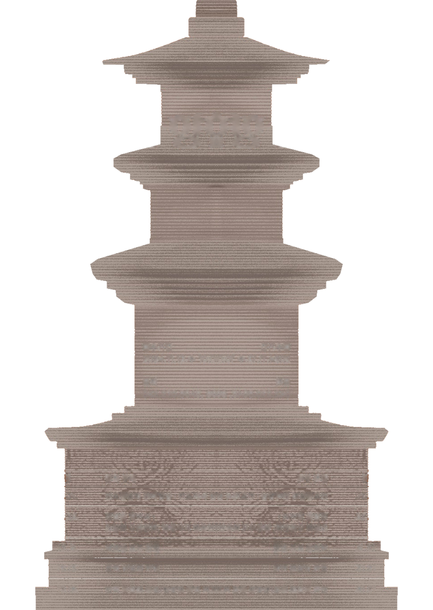

탑파 塔婆 :
불국토를 향한
염원
2024. 11. 21. 목 - 12. 19. 목
14:00 - 16:00
대전선사박물관 세미나실
대상
대전시민(일반성인) 30명
접수기간
2024.11.13.수 10:00 - 선착순
접수방법
대전선사박물관 홈페이지
교육신청란 선착순 접수
문의
042.270.8646, 8648
1
11.21.
인도불탑의 전래양상 :
인도에서 한국으로
천득염전남대학교 건축학부 석좌교수
2
11.28.
전탑을 찾아서 :
조탑리 오층전탑,
법흥사지 칠층전탑,
동부동 오층전탑 등
안동 답사
3
12.5.
석탑을 보는 관점
박경식단국대학교 사학과 명예교수
4
12.12.
한국 석탑의 이해
박경식단국대학교 사학과 명예교수
5
12.19.
한국 불탑의 특징(한중일 불탑 비교)
천득염전남대학교 건축학부 석좌교수